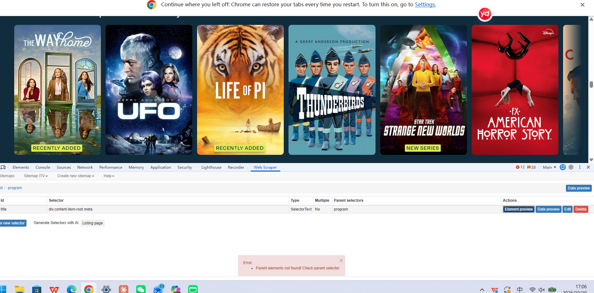

Digital practice/critical reflection/everyweek digital experiences/
Week 1
This week, I learned that technology does not develop separately from society. Society influences how technology is designed and used, and technology also affects people’s lives.
I used to think that the effects of new technology were inevitable. Now I ask more questions: Who designed and controls it? Who does it help, and who might it leave out? This has helped me think more critically about digital media and AI.
week 2（workshop）
What I did
This week’s workshop introduced two ways of building a portfolio website: CampusPress and GitHub Pages. With CampusPress, I named my site, chose a template and a theme that controls its structure, design and appearance, then added content through posts or pages. With GitHub, I wrote an HTML file for the structure and a CSS file for the style, uploaded them to a repository, and used the Pages settings to generate a link so that others could visit the site.
Comparing the two methods
CampusPress has a lower threshold and is easier to get started with. For example, when changing some of the site’s visual settings, I could edit while looking at the page itself, with a clear template and the effect of my changes visible. With a website generated through GitHub, making similar visual changes meant editing the HTML and CSS files in VS Code and then uploading the files to GitHub again before I could see the result
In CampusPress, the underlying code of a web page is hidden, whereas in GitHub I can open the files and see it. CampusPress made it easy for me to overlook the underlying logic of web pages, so my understanding of web design stayed at the level of surface appearance. If I had not used GitHub, I might never have known what HTML and CSS are, or what they do. For example, when using CampusPress, I did not actively come into contact with HTML or CSS, because the structure and style of the site were already preset, and I only needed to choose a theme I liked, the text, the colours and so on. When I generated a website with GitHub, changing parameters in VS Code became, for me, a more systematic and more complicated undertaking.
Both methods had me working within different presets, but there are differences between them. At first, I thought CampusPress would give me a sense of achievement more easily, because I could easily create a clear and harmonious page structure. However, the sense of achievement behind it came mostly from programs that had already been written and from ready-made templates. Now I think that, although GitHub let me see the structure of a web page, most of the code I wrote was typed in following the workshop materials, or came from the template downloaded from HTML5 UP, so my understanding and sense of achievement also partly depend on “ready-made things”. In addition, GitHub has rules of its own, such as needing an index.html in the root directory and having to switch on Pages in Settings in the specified way. So, with CampusPress’s presets, I can choose and use them, but I cannot necessarily open or see them. With GitHub’s presets, I can open and change them, but I also have to take responsibility myself, and if I get something wrong, the website breaks.
Difficulties I encountered
The first time I changed the background and font colours in the editor, it went smoothly, but the second change did not take effect: I could not see the colour from my second change on GitHub. I eventually found that the reason was that I had only changed the file on my computer and had not uploaded it again, so the online version had not changed. This made me realise that, when building a website with code, the local files and the online website are two separate versions, and I need to manage their synchronisation myself, whereas in CampusPress changes happen directly in the back end.
Not only does updating files affect how the website actually looks; the level at which files are placed also determines whether HTML can find them. When I first put the template downloaded from HTML5 UP into GitHub, I did not upload the assets and images folders. As a result, only the page itself would open on my website, with no styling, just plain text and blue links. I opened index.html and saw href="assets/css/main.css", then compared it with the file structure and uploaded the missing assets and images folders. The second time, I dragged the whole folder into GitHub. index.html ended up inside a subfolder, so it was not in the root directory. GitHub Pages could not find the home page and showed the README instead, so the page displayed only the repository name and a short description. I then moved index.html and the folders into the root directory of the repository.Afterwards, I realised that HTML uses paths to find CSS and image files, and the folder levels must match those paths, otherwise the files cannot be found. A web page is not “one thing” but many files connected by paths. In CampusPress, this layer of relationships is managed by the platform.
Week 3（workshop）
What I did
This week, I learned two ways to scrape website data: using the Web Scraper browser extension and using Python.
At first, I had trouble setting the selectors because the scraper could not find the parent elements. After checking and adjusting the selectors, I solved the problem and collected the titles.
I learned that web scraping depends on the structure of a website. Even when the information is visible, the scraper needs the correct selectors to find it. This made me think about how the data we collect depends on how a website is organised. In future, I will check the selectors with the preview tools before scraping.

Week 4（workshop）
What we learned
This scraping exercise made me realise that data is “framed”. the platforms, subreddits,keywords and time range we choose determine whtat we able to see. We first searched Bluesky for posts from the past month using”chatGPT” and “univeisity essay” and found only 2 posts, which showed that our keywords and time range were too restrictive. In our first Ressit collection, we did not set a search keyword and only entered “uniuk” as keyword. The tool stilled returned 101 records,but these were simply the most recent posts in the subreddit and had little to do with AI. This shows that the tool does not warn whether the data is relevant; judging relevance is the responsibility of researcher. We then used the name of four AI tools( chatGPT, Claude,Gemini and Deepseek) as keywords, collected one dataset for each, merged the four datasets, and selected 31 posts for coding. These attempts showed me that when keywords are too narrow, there is not enough data, and when no keyword is set, the data is irrelevant. Each adjustment changed what we able to “see”, so date is not neutral material waiting to be collected; it is shaped by our choices.
The process of turning text into numbers is subjective, and its validity is limited. We ended up collecting 64 posts relevant to our topic, but only 18 of them could be fully coded using the variables we had set. This is because we designed the variables in advance, whereas the people posting did not write according to our variables: many posts did not mention the tool or the context of use, so they could only be coded as “not stated” or were excluded. This means our coding frame could not accommodate all of the data.
In addition, judging the variables was itself subjective. For example, whether a post is “positive” or “neutral” may be judged differently by different people. The design of the coding table is also a choice: the categories we set determine which phenomena can be seen and which are put into “other” or “not stated”.
Limitations of web scraping
The data obtained through web scraping is limited. Only people who are willing to post publicly online appear in the data. Silent students, students who do not use these platforms, and students who are unwilling to talk publicly about their use of AI will not be seen.
The second limitation is platform bias. Our data comes from r/uniuk, a general subreddit for university students in the UK, where posters come from all disciplines and topics are not limited to study. Posts usually contain no information about the poster’s discipline or year of study, so we could not confirm whether a poster was an arts student. Moreover, a post is only a few sentences long, so in many cases we could only guess when coding. Therefore, the data can only reflect the views of university students who post in this subreddit, and cannot represent students in the Faculty of Arts.
The last limitation concerns the tools themselves. With the keywords and time range we used, Bluesky returned very few relevant posts, and the search tool could not filter posters by discipline or university. As a result, what we were able to collect depended largely on what happened to be on the platform.
Ethical issues
We recognise that although these posts were published publicly, the posters did not know their content would be used for research, and many posts involve concerns about academic misconduct or personal circumstances (such as health conditions), which makes them sensitive. For this reason, we did not keep any usernames, links or original post text in our table. Instead, we summarised and rewrote each post and used ID numbers in place of identities. In our analysis we mainly used numerical codes and did not quote the original text. However, we still retained the sensitive experiences expressed in these posts. This means that, even with identifying information removed, we used their experiences without their consent, which is an ethical problem this method cannot fully resolve.
Data collection also involves issues of power. When organising the data, we were in effect defining students’ experiences on their behalf: we decided which parts of a post to keep and which to leave out, and we decided which context of use it belonged to and what level of trust it showed. A student may have written a complex account of their feelings, which in our table became only a few numbers. The students who posted did not know they were being studied and had no chance to correct our interpretations. For example, we may have judged that a post expressed concern, while the poster might not see it that way. At the same time, whether a post could be collected depended on the settings of the platform and the tool, not on the students’ own choice. This reminds us that data may look objective, but behind it lie the judgements and choices of the researchers.
If we had more time
If we had more time, we would make improvements in several ways. First, we would add other data sources, such as student newspapers, university reports and students’ union accounts. These are published for a public audience and their authors know they will be read and cited, so they are ethically more straightforward and also easier to reference. Second, we would add methods such as questionnaires or interviews, so that we could hear directly from students and fill in the context that online data lacks. Of course, these methods also require informing participants and obtaining their consent, and usually ethical approval. Third, before formal collection, we would test keywords on a small sample, to avoid what happened to us this time, when overly strict keywords, or no keywords at all, gave us too little or irrelevant data. Finally, several members would code the same set of posts independently to check whether the coding is consistent. Where it is not, the differences can help us revise the coding table and reduce the effect of subjective judgement.